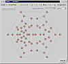
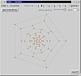

TwoView, the 2D viewer
Our 2D viewer can show vertex numbers and has a "re-embedding" feature that effectively turns the 2D plane (upon which our graphs are embedded) into a closed surface (such as the surface of a sphere). TwoView is configured through the controls near the top of the window, with initial values coming from the configuration file CaGe.ini.
This screenshot shows TwoView displaying the same graph we have seen in
Jmol on the previous page. TwoView offers buttons
to select the size of the vertex symbols, a checkbox to decide whether
vertex numbers should be shown, and a slider and a number field to control
the appearance of the edges. Showing vertex numbers may increase the size
of the vertex symbols, and using smaller vertex symbols may turn off the
display of vertex numbers.
Re-embedding takes place when you click the mouse somewhere within an interior face of the graph. The 2D embedder is then called to compute a new 2D embedding in which the clicked face becomes the "outside" face. (There is a command line option that communicates the face clicked into to the embedder. CaGe calls the embedder with that option and writes the current state of the graph to the embedder's input. Some generators disable the re-embedding feature; in that case, TwoView won't react to mouse clicks within graph faces and the "reset embedding" button shown in these screenshots will be absent from the TwoView window.)

The second screenshot shows TwoView after clicking the mouse within the
face surrounded by vertices 56, 57, 58, 59, and 60, and adjusting the
controls to use smaller vertex symbols without numbers. Without these
adjustments it would have been difficult to see the edges around the smaller
faces in the display.
How can an interior face suddenly become the exterior one? Imagine you have drawn the original 2D graph onto the front half of some super-elastic balloon. Now punch a circular hole into the balloon surface, within one of the faces. Our balloon is elastic and not tightly filled up, so it won't explode. Imagine the immediate surroundings of the hole being like a ring-shaped rubber band. Take that ring into both hands, your fingers reaching through the hole into the inside of the balloon, and pull out the ring, expanding it into a large circle. The rest of the balloon material is of course still attached to the rubber ring and is pulled into a straight planar shape as the ring becomes very large. On the balloon material you will now find a 2D drawing of our graph with a new outside face. It will need some vertex repositioning, but it provides a start. The embedder does not actually work in this way, but using this model we hope to explain why there is nothing special about the outside face, and why we said in the beginning that we are considering our 2D plane a closed, spherical surface rather than a standard (Euclidean) plane.
Once you have re-embedded a graph in this way, the button titled "reset embedding" is enabled. Clicking it will reset the 2D embedding to its original state. If you don't use this button, the 2D embedding will be kept in its changed state, even if you move on to other graphs and later use the results window's "review" buttons to return to this one. This also affects the "2D" save button in the results window: it will save the 2D embedding that TwoView is showing, and if you do change the 2D embedding via TwoView you can actually 2D-save again (the 2D button in the results window will be enabled even if you have used it before).
TwoView itself has a save button as well: "save PS" button will write a PostScript representation of the graph as currently shown by TwoView, with all effects of TwoView's various control settings reproduced as closely as possible. A short dialogue asks you for the destination and whether you want to include some headline for the graph.

| Viewing
results |
||
| Jmol,
a 3D viewer |
||